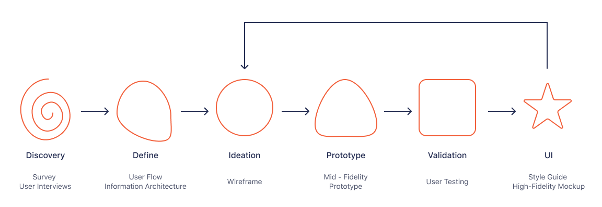
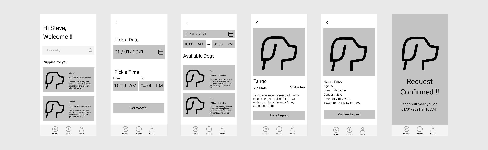
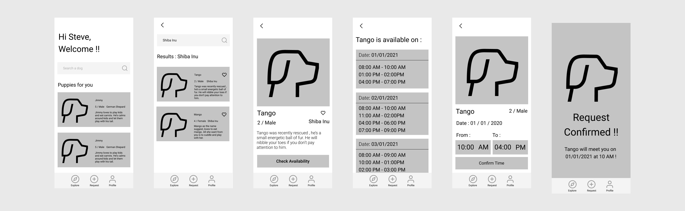

Hypothesis
Studies have shown that people who are going through
mental health problems have problems accessing Therapy dogs.
Problem
Building an app that connects people with Theapy dogs.
My Roles
My Process
1. Discovery
User Research
I wanted to learn more about how stress co-relates with petting a dog so I conducted
an online survey that was completed by 34 participants.
Survey Questions
- Do you like dogs ?
- Do you own a dog ?
- What’s your age ?
- What’s your Gender ?
- What's your current salary ?
- On scale of 1 - 10, how stressed are you ?
- Will spending time with dogs help you manage stress
- Where would you prefer to spend time with Dogs
-
Do you like dogs ?
-
Do you own a dog ?
-
What’s your age ?
-
What’s your Gender ?
-
What's your current salary ?
-
On scale of 1 - 10, how stressed are you ?
-
Will spending time with dogs help you manage stress
-
Where would you prefer to spend time with Dogs
General Takeway
- People who are suffering from stress feel that owning a dog might help them.
- People want to own a dog but aren't ready to commit to it since it comes with overhead responsibilities.
Persona
Based on user research, I created 2 personas. Meet Lucy and Steve.
2. Define
Story Board
To visvalize the general use case I create a small storyboard of a user requesting the service.
Brainstorming Features
The next step was to put the knowledge from research in motion to define the app's functions, user flows and design the prototype.
App Functionalities
- Search for therapy dogs
- Explore available therapy dogs
 Request a therapy dog
Request a therapy dog- Account
- Request history
Information Architecture
After identifying set of major functionalities required, I mapped out an information architecture to visvalize the hierarchy of major and minor features.
It gave me an idea of how to organize content and how many interactions or screens it'll take to complete a task
User Flow
Next I created a user flows for all possible tasks.
3. Ideation
With enough information gathered I started with the creating wireframes.
The prototype was designed in two iterations. The first part was implementing following tasks :
Placing a request
Searching for available dogs
Request
Search
5. Validate
User Test
I conducted user testing on my mid-fidelity prototype on a mobile phone to see how users would complete certain tasks once they were given some context.
I wanted to know if the tap and scroll were intuitive.
The goal was to identify pain points that could be improved in future iterations.
Tasks :
Placing a request
Searching a dog
Explore available therapy dogs and get details
Affinity Mapping
After conducting user test, I interviewed them regarding their experience and whether they wanted extra features , especially to people who do not use app yet. I organized my findings in an affinity map to identify the pain points and potential solutions that would be incorporated into future iterations.
Bottom Nav Analysis
After implementing new features, I was still on hook regarding UI and UX for bottom nav so I carried out series of tests and sought out inspiration from other apps
Inspiration
First I analyzed how other apps have implemented their bottom nav and why they did so.


Iterations
After gaining insight on how other apps have implemented their bottom nav, I carried out different iterations and came to final design with my intuition
6. UI
After working the changes into the wireframes, it was time to proceed with the visual design. Since dogs are friendly, energetic animals, I went for orange color as my primary color since orange represents excitement and pastle orange is a common color among dogs. To contrast well with it, I chose dark navy blue as my secondary color.
7. Lessons Learned
Coming up with a concept app was certainly a tricky project. First I wanted to make sure that there's a need for such app and that there's a market for it, turned out that many people want such services. Next big hurdle was ideation, since there are no competitor apps I had to go ahead with my intuition and build features.
Next big learning leap was testing and validation, during initial high fidelity test for bottom nav, I skeed out for inspiration from other products, understood why they were built a certain way and with help of continuous iterations I reached a middle ground where icons were unique and minimal to achieve an intuitive user experience.
“If you are not embarrassed by the first version of your product, you've launched too late"-Reid Hoffman.
My next big learning leap was shipping the minimum viable product and get into hands of users, this helped in improving overall asthetics, learn new figma features, figure out new ways to implement a functionality and solve interatcion bugs